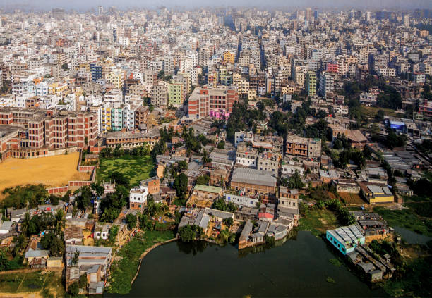

THE 1 BEST TOUR ATRACTIVE PLACE IS PARIS
Paris, France's capital, is a major European city and a global center for art, fashion, gastronomy and culture. Its 19th-century cityscape is crisscrossed by wide boulevards and the River Seine. Beyond such landmarks as the Eiffel Tower and the 12th-century, Gothic Notre-Dame cathedral, the city is known for its cafe culture and designer boutiques along the Rue du Faubourg Saint-Honoré.
THE 2 BEST TOUR BEST PLACE IS SWIZER LAND
Switzerland is a mountainous Central European country, home to numerous lakes, villages and the high peaks of the Alps. Its cities contain medieval quarters, with landmarks like capital Bern’s Zytglogge clock tower and Lucerne’s wooden chapel bridge. The country is also known for its ski resorts and hiking trails. Banking and finance are key industries, and Swiss watches and chocolate are world renowned.

THE 3 BEST ATTRACTION PLACE IS NEW YORK
New York City comprises 5 boroughs sitting where the Hudson River meets the Atlantic Ocean. At its core is Manhattan, a densely populated borough that’s among the world’s major commercial, financial and cultural centers. Its iconic sites include skyscrapers such as the Empire State Building and sprawling Central Park. Broadway theater is staged in neon-lit Times Square.

THE 4 BEST TOUR ATTRACTION PLACE IS PAKISTAN
Pakistan, officially the Islamic Republic of Pakistan, is a country in South Asia. It is the world's fifth-most populous country, with a population exceeding 225.1 million, and has the world's second-largest Muslim population. Pakistan is the 33rd-largest country by area, spanning 881,913 square kilometres.
THE 5 BEST TOUR PLACE IS AMERICA
The U.S. is a country of 50 states covering a vast swath of North America, with Alaska in the northwest and Hawaii extending the nation’s presence into the Pacific Ocean. Major Atlantic Coast cities are New York, a global finance and culture center, and capital Washington, DC. Midwestern metropolis Chicago is known for influential architecture and on the west coast, Los Angeles' Hollywood is famed for filmmaking.
THE 6 BEST TOUR ATTRACTION PLACE IS IRELAND
The Republic of Ireland occupies most of the island of Ireland, off the coast of England and Wales. Its capital, Dublin, is the birthplace of writers like Oscar Wilde, and home of Guinness beer. The 9th-century Book of Kells and other illustrated manuscripts are on show in Dublin’s Trinity College Library. Dubbed the "Emerald Isle” for its lush landscape, the country is dotted with castles like medieval Cahir Castle.

THE 7 BEST TOUR ATTRACTION PALCE IS RUSSIA
Russia, or the Russian Federation, is a country spanning Eastern Europe and Northern Asia. It is the largest country in the world, covering over 17,125,191 square kilometres, and encompassing one-eighth of Earth's inhabitable landmass.

THE 8 BEST TOUR ATTRACTION PLACE IS DUBIA
Dubai is a city and emirate in the United Arab Emirates known for luxury shopping, ultramodern architecture and a lively nightlife scene. Burj Khalifa, an 830m-tall tower, dominates the skyscraper-filled skyline. At its foot lies Dubai Fountain, with jets and lights choreographed to music. On artificial islands just offshore is Atlantis, The Palm, a resort with water and marine-animal parks.
THE 9 BEST TOUR ATTRACTION PLACE IS SAUDIA ARABIA
Saudi Arabia, officially the Kingdom of Saudi Arabia, is a country in Western Asia. It spans the vast majority of the Arabian Peninsula, with a land area of approximately 2,150,000 km². Saudi Arabia is the largest country in the Middle East, and the second-largest country in the Arab world.

THE 10 BEST TOUR ATTRACTION PLACE IS IRAN
Iran, also called Persia, and officially the Islamic Republic of Iran, is a country in Western Asia. Wikipedia
THE 11 BEST TOUR ATTRACTION BEST PLACE IS AUSTRALIA
Australia, officially the Commonwealth of Australia, is a sovereign country comprising the mainland of the Australian continent, the island of Tasmania, and numerous smaller islands. It is the largest country by area in Oceania and the world's sixth-largest country.
THE 12 BEST TOUR ATTARCTION PLACE IS CHINA
China, officially the People's Republic of China, is a country in East Asia. It is the world's most populous country, with a population of more than 1.4 billion. China spans five geographical time zones and borders 14 different countries, the second most of any country in the world after Russia.

THE 13 BEST TOUR ATTRACTION PLACE IS NEWZEALAND
New Zealand is an island country in the southwestern Pacific Ocean. It consists of two main landmasses—the North Island and the South Island —and over 700 smaller islands, covering a total area of 268,021 square kilometres.

THE 14 BEST TOUR ATTRACTION PLACE IS SWEDEN
Sweden is a Scandinavian nation with thousands of coastal islands and inland lakes, along with vast boreal forests and glaciated mountains. Its principal cities, eastern capital Stockholm and southwestern Gothenburg and Malmö, are all coastal. Stockholm is built on 14 islands. It has more than 50 bridges, as well as the medieval old town, Gamla Stan, royal palaces and museums such as open-air Skansen.

THE 15 BEST TOUR ATTRACTION PLACE IS SOUTH AFRICA
South Africa is a country on the southernmost tip of the African continent, marked by several distinct ecosystems. Inland safari destination Kruger National Park is populated by big game. The Western Cape offers beaches, lush winelands around Stellenbosch and Paarl, craggy cliffs at the Cape of Good Hope, forest and lagoons along the Garden Route, and the city of Cape Town, beneath flat-topped Table Mountain.

THE 16 BEST TOUR ATTRACTION PLACE IS KOREA
South Korea, an East Asian nation on the southern half of the Korean Peninsula, shares one of the world’s most heavily militarized borders with North Korea. It’s equally known for its green, hilly countryside dotted with cherry trees and centuries-old Buddhist temples, plus its coastal fishing villages, sub-tropical islands and high-tech cities such as Seoul, the capital.
THE 17 BEST TOUR ATTRACTION PLACE IS JAPAN
Japan is an island country in East Asia, located in the northwest Pacific Ocean. It is bordered on the west by the Sea of Japan, and extends from the Sea of Okhotsk in the north toward the East China Sea and Taiwan in the south.
THE 18 BEST TOUR ATTRACTION PLACE IS TOKYO
Tokyo, Japan’s busy capital, mixes the ultramodern and the traditional, from neon-lit skyscrapers to historic temples. The opulent Meiji Shinto Shrine is known for its towering gate and surrounding woods. The Imperial Palace sits amid large public gardens. The city's many museums offer exhibits ranging from classical art (in the Tokyo National Museum) to a reconstructed kabuki theater (in the Edo-Tokyo Museum).

THE 19 BEST TOUR BEST ATTTRACTION PLACE IS INDIA
India, officially the Republic of India, is a country in South Asia. It is the seventh-largest country by area, the second-most populous country, and the most populous democracy in the world.

THE 20 BEST TOUR ATTRACTION PLACE IS SRI LANKA
Sri Lanka, formerly known as Ceylon, and officially the Democratic Socialist Republic of Sri Lanka, is an island country in South Asia. It lies in the Indian Ocean, southwest of the Bay of Bengal, and southeast of the Arabian Sea; it is separated from the Indian subcontinent by the Gulf of Mannar and the Palk Strait.

THE 21 BEST TOUR ATTRACTION PLACE IS BANGLADESH
Bangladesh, to the east of India on the Bay of Bengal, is a South Asian country marked by lush greenery and many waterways. Its Padma (Ganges), Meghna and Jamuna rivers create fertile plains, and travel by boat is common. On the southern coast, the Sundarbans, an enormous mangrove forest shared with Eastern India, is home to the royal Bengal tiger.

THE 22 BEST TOUR ATTRACTION PLACE IS SYRIA
Syria, officially the Syrian Arab Republic, is a country in Western Asia, bordering Lebanon to the southwest, the Mediterranean Sea to the west, Turkey to the north, Iraq to the east, Jordan to the south, and Israel to the southwest. Its capital and largest city is Damascus.
THE 23 BEST TOUR ATTRACTION PLACE IS AFGANISTAN
Afghanistan, officially the Islamic Emirate of Afghanistan, is a landlocked country at the crossroads of Central and South Asia. It is bordered by Pakistan to the east and south, Iran to the west, Turkmenistan and Uzbekistan to the north, and Tajikistan and China to the northeast.
THE 24 BEST TOUR ATTRACTION PLACE IS CANADA
Canada is a country in North America. Its ten provinces and three territories extend from the Atlantic to the Pacific and northward into the Arctic Ocean, covering 9.98 million square kilometres, making it the world's second-largest country by total area.
THE 25 BEST TOUR ATTRACTION PLACE IS MALDIVES
Maldives, officially the Republic of Maldives, is an archipelagic country in the Indian subcontinent of Asia, situated in the Indian Ocean. It lies southwest of Sri Lanka and India, about 750 kilometres from the Asian continent's mainland.

EDIT BY ABDUL REHMAN ASIF